Contents
file: pde_Laplace_2D_v1.m author: Polcz Péter <ppolcz@gmail.com>
Created on 2016.12.07. Wednesday, 15:58:30
% fname: full path of the actual file pcz_cmd_fname('fname'); persist = pcz_persist(fname); %persist.backup();
A Laplace egyenlet megoldása egy L alakú tartományon egyszerű peremfeltételek mellett
Az tartomány létrhozása. A polygon tömb a tartomány sarkait tartalmazza: első oszlop 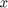, második oszlop 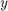 koordináták. A harmadik oszlop pedig az abból a sarokpontból a következő sarokpontban induló él konstants peremfeltételét tartalmazza, vagyis a (-1,0) pontból a (0,0) pontba futó élen a függvény értéke 0.2 kell legyen, a (0,0) pontból a (0,1) pontba futó élen a függvény -0.2 kell legyen, stb.
polygon = [
0 1 0
1 1 0
1 -1 0
-1 -1 0
-1 0 0.2
0 0 -0.2 ];
pdeGeom = geomDataFromPolygon(polygon(:,1:2));
PDE modell. Létrehozunk egy PDE modellt, ahol egyetlen függő változó van, az 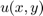
numberOfPDE = 1; pdem = createpde(numberOfPDE); geometryFromEdges(pdem,pdeGeom);
Megjelenítés
figure('Position', [668 596 1012 377]); subplot(121) pdegplot(pdem, 'edgeLabels', 'on'); axis equal title('$\Omega$ tartomany, amelyen megoldom az egyenletet', 'Interpreter', 'latex'); plabel 'x' '$x$ tengely', plabel 'y' '$y$ tengely'
Az -edig élen az értéke polygon(i,3) kell legyen.
for i = 1:size(polygon,1); applyBoundaryCondition(pdem,'Edge', i, 'u', polygon(i,3)); end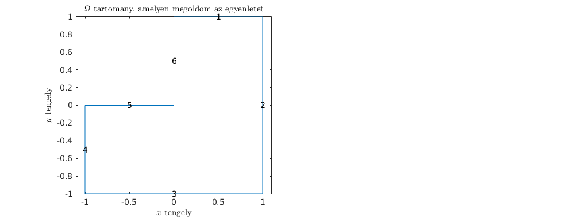
Az tartomány felosztása, háromszögelés. A háromszögelés finomságát, sűrűségét a generateMesh Hmax tulajdonságával tudjuk szabályozni. A Hmax gyakorlatilag a háromszögek átmérőjének nagyságát szabályozza (megközelítőleg ekkorák lesznek a háromszögek.)
Durva háromszögelés
subplot(122); axis equal title('$\Omega$ tartomany haromszogelve', 'Interpreter', 'latex'); msh = generateMesh(pdem,'Hmax',0.5); pdemesh(pdem); plabel 'x' '$x$ tengely', plabel 'y' '$y$ tengely'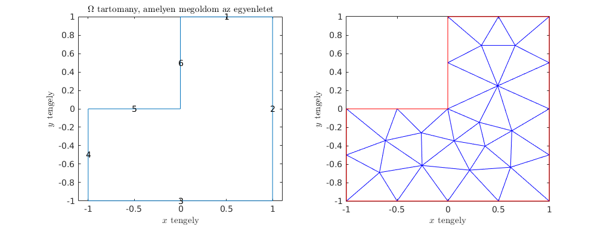
Finom háromszögelés
msh = generateMesh(pdem,'Hmax',0.05); pdemesh(pdem); plabel 'x' '$x$ tengely', plabel 'y' '$y$ tengely'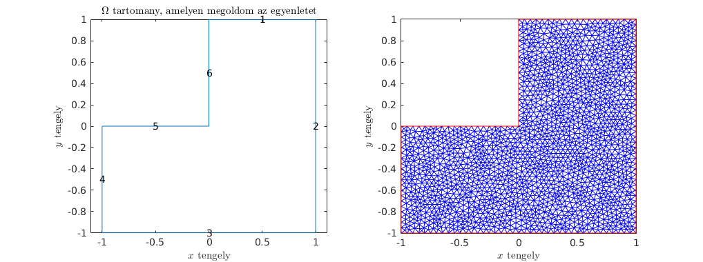
Megoldjuk az egyenletet
[u] = assempde(pdem,1,0,0);
Vizualizáció
[p,~,t] = meshToPet(msh); figure('Position', [668 220 674 753]), hold on trisurf(t(1:3,:)',p(1,:)',p(2,:)',u), shading interp; light, axis square, view([ 233 , 34 ]) plabel 'x' '$x$ tengely', plabel 'y' '$y$ tengely' edge = polygon(repmat(1:size(polygon,1),[2,1]), :); edge = [edge(:,1:2) , circshift(edge(:,3),1)]; edge = [edge ; edge(1,:)]; plot3(edge(:,1), edge(:,2), edge(:,3),'r', 'LineWidth', 3)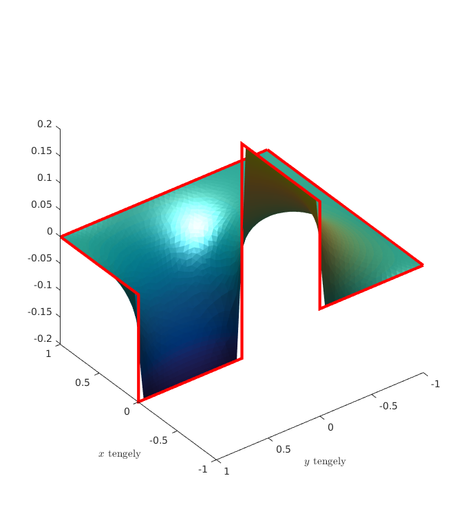
A Laplace egyenlet megoldása egy L alakú tartományon érdekesebb peremfeltételek mellett
Az tartomány létrhozása. Marad a régi, csak a konstant peremfeltételek változtak (igazából lényegtelen milyen értékek szerepelnek ott, felül fogom írni őket).
polygon = [
0 1 0
1 1 NaN
1 -1 NaN
-1 -1 0
-1 0 0.2
0 0 -0.2 ];
pdeGeom = geomDataFromPolygon(polygon(:,1:2));
PDE modell. Létrehozunk egy PDE modellt, ahol egyetlen függő változó van, az 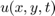. Itt sincs semmi változás.
numberOfPDE = 1; pdem = createpde(numberOfPDE); geometryFromEdges(pdem,pdeGeom);
Az -edig élen az értéke polygon(i,3) kell legyen.
for i = 1:size(polygon,1); applyBoundaryCondition(pdem,'Edge', i, 'u', polygon(i,3)); end
További nem-konstants függvények, melyek Dirichlet feltételként fogok megfogalmazni adott peremeken.
bcfun2 = @(x,y) 0.05*sin(-2*pi*y); bcfun2if = @(region,state) bcfun2(region.x, region.y); bcfun3 = @(x,y) -0.2*(x.^2-1); bcfun3if = @(region,state) bcfun3(region.x, region.y);
Nem-konstans Dirichlet feltételek
- 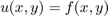 típusú feltétel esetén az u-t kell megadni:
- 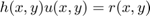 típusú feltétel esetén a h és az r-t kell megadni:
- 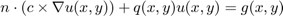 típusú feltételek esetén csak a q és g függvényeket lehet megadni c-t nem, amit viszont alapértelmezetten nullának vesz. Így igazi Newmann peremfeltételt nem lehet megfogalmazni.
Lásd még: applyBoundaryCondition, Specify Nonconstant Boundary Conditions
applyBoundaryCondition(pdem,'Edge', 2, 'r', bcfun2if, 'h', 1); applyBoundaryCondition(pdem,'Edge', 3, 'u', bcfun3if); applyBoundaryCondition(pdem,'Edge', 4, 'q', 1, 'g', -0.1);
Háromszögelés és megoldjuk az egyenletet
msh = generateMesh(pdem,'Hmax',0.04);
[u] = assempde(pdem,1,0,0);
Vizualizáció
[p,~,t] = meshToPet(msh); figure('Position', [668 220 674 753]), hold on trisurf(t(1:3,:)',p(1,:)',p(2,:)',u), shading interp; light, axis square, view([ 233 , 34 ]) plabel 'x' '$x$ tengely', plabel 'y' '$y$ tengely' edge = polygon(repmat(1:size(polygon,1),[2,1]), :); edge = [edge(:,1:2) , circshift(edge(:,3),1)]; edge = [edge ; edge(1,:)]; plot3(edge(:,1), edge(:,2), edge(:,3),'r', 'LineWidth', 3) x = linspace(-1,1,100); plot3(x*0+1,x,bcfun2(x,x),'r', 'LineWidth', 3); plot3(x,x*0-1,bcfun3(x,x),'r', 'LineWidth', 3);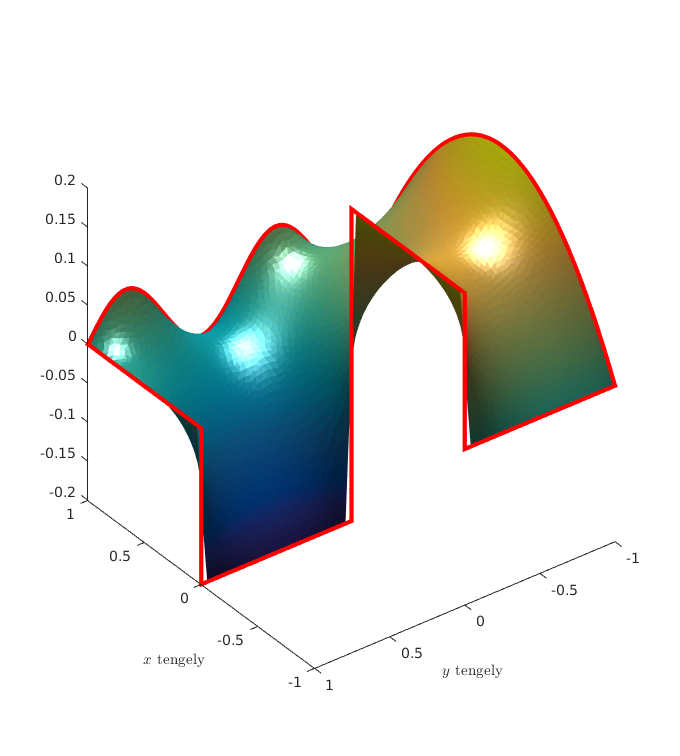